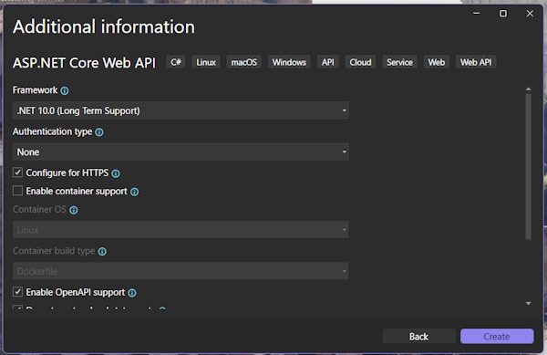
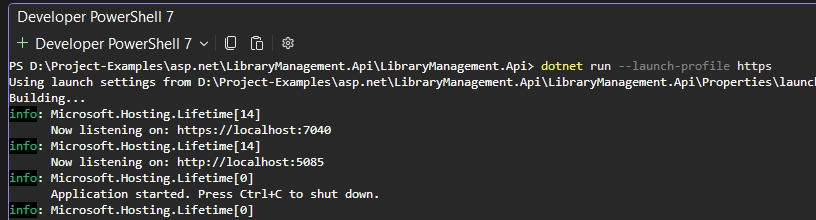

Call the project LibraryManagement.Api.

Make sure to Enable Open API support. We will use this for documentation.
We will use both Controllers and Minimal API but for now turn Controllers off and go with the Minimal API option.
We have a file named LibraryManagement.Api.http that contains endpoints.
@LibraryManagement.Api_HostAddress = http://localhost:5085
GET {{LibraryManagement.Api_HostAddress}}/weatherforecast/
Accept: application/json
This is the heart of our application. It is setup to run our application with one Minimal API endpoint.
The first method call in Program.cs is to call:
var builder = WebApplication.CreateBuilder(args);
CreateBuilder is crucial to our application and it is where we register all services our application needs. Things like database access and mapping tools, etc.
For now the only service that is registered is AddOpenApi
builder.Services.AddOpenApi();
This is used to document the API. Documentation will be generated automatically describing our endpoint. We will use tools to view our API.
Once all services are registered we will call Builder.Build():
var app = builder.Build();
This finishes the configuration phase and create the actual application object.
A good thing to remember is that everything before Builder.Build() is service registration.
The next statement is used if were are in the Development cycle.
// Configure the HTTP request pipeline.
if (app.Environment.IsDevelopment())
{
app.MapOpenApi();
}
In this example we will run app.MapOpenApi() if we are in development.
The first MapOpenApi() statement registers the service (Be ready to use it) and the last exposes the OpenAPi endpoint (Use it). This statement is only useful to us in the Development process.
The next statement ensures that all http requests are redirected to https.
app.UseHttpsRedirection();
This completes the technical setup and the next section is our sample endpoint.
First, we create some sample data:
var summaries = new[]
{
"Freezing", "Bracing", "Chilly", "Cool", "Mild", "Warm", "Balmy", "Hot", "Sweltering", "Scorching"
};
Next is our sample endpoint named weatherforecast.
app.MapGet("/weatherforecast", (HttpContext httpContext) =>
{
var forecast = Enumerable.Range(1, 5).Select(index =>
new WeatherForecast
{
Date = DateOnly.FromDateTime(DateTime.Now.AddDays(index)),
TemperatureC = Random.Shared.Next(-20, 55),
Summary = summaries[Random.Shared.Next(summaries.Length)]
})
.ToArray();
return forecast;
})
.WithName("GetWeatherForecast");
The next statement runs our sample endpoint:
app.Run();
This means that the program keeps running and waiting for requests and only stops when we end it.
Note: any code that we write after app.Run() won't be executed so make sure that all of your code is before this statement.
We are going to open the Integrated terminal to run our application with this command (make sure you are in the correct directory):
dotnet run --launch-profile https
This will start the application. When you run this not a lot seems to happen but the application is running in the background. We are actually connected to localhost where our API is hosted.

There are 2 localhost settings but we are only interested in the https setting. The port number states which application or service on a machine should receive incoming traffic requests from an incoming service. Multiple applications can run on a machine at the same time and the port identifies the application that is currently running.
If you enter the following address:
http://localhost:5085
Notice that it changes to:
https://localhost:7040
This is because of the https redirection statement in Program.cs.
Still there is nothing showing and this is because https://localhost:7040 is the root address of our API. By itself it doesn't return anything.
To actually use the API we need to send the request to a specific endpoint. What endpoint is exposed? There is only one in our Program.cs file and that is /weatherforecast.
To consume our sample endpoint:
https://localhost:7040/weatherforecast
This produces a JSON array of objects that show temperatures. This is basically raw data that might be sent to a web page that produces a graphical weather chart.
To close the application just press CTRL-C in the terminal.
You can see our application running in the console. It is showing the ports that it is running on and that the application has started. we can also add Console.WriteLine() statements to Program.cs to give us more information.
Add this statement before app.Run():
Console.WriteLine("Started the application...");
app.Run();
Started the application...
info: Microsoft.Hosting.Lifetime[14]
Now listening on: https://localhost:7040
...
This is alright for quick testing but in future we will register a logging service.